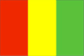
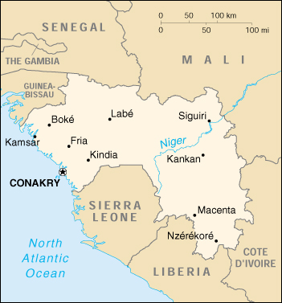

{kind=link}


| Guinea |  |
|
|  | |
| Introduction |
Background: Independent from France since 1958, Guinea did not hold democratic elections until 1993 when Gen. Lansana CONTE (head of the military government) was elected president in disputed balloting. Security clampdowns continue, although not as severe as in earlier decades. Reelected in 1998, the president faced growing criticism in 1999 for his jailing of a major opposition leader and widespread economic malaise. Unrest in Sierra Leone also continued to threaten Guinea's stability.
| Geography |
Location: Western Africa, bordering the North Atlantic Ocean, between Guinea-Bissau and Sierra Leone
Geographic coordinates: 11 00 N, 10 00 W
Map references: Africa
Area:
total:
245,857 sq km
land:
245,857 sq km
water:
0 sq km
Area - comparative: slightly smaller than Oregon
Land boundaries:
total:
3,399 km
border countries:
Cote d'Ivoire 610 km, Guinea-Bissau 386 km, Liberia 563 km, Mali 858 km, Senegal 330 km, Sierra Leone 652 km
Coastline: 320 km
Maritime claims:
exclusive economic zone:
200 nm
territorial sea:
12 nm
Climate: generally hot and humid; monsoonal-type rainy season (June to November) with southwesterly winds; dry season (December to May) with northeasterly harmattan winds
Terrain: generally flat coastal plain, hilly to mountainous interior
Elevation extremes:
lowest point:
Atlantic Ocean 0 m
highest point:
Mont Nimba 1,752 m
Natural resources: bauxite, iron ore, diamonds, gold, uranium, hydropower, fish
Land use:
arable land:
2%
permanent crops:
0%
permanent pastures:
22%
forests and woodland:
59%
other:
17% (1993 est.)
Irrigated land: 930 sq km (1993 est.)
Natural hazards: hot, dry, dusty harmattan haze may reduce visibility during dry season
Environment - current issues: deforestation; inadequate supplies of potable water; desertification; soil contamination and erosion; overfishing, overpopulation in forest region
Environment - international agreements:
party to:
Biodiversity, Climate Change, Desertification, Endangered Species, Hazardous Wastes, Law of the Sea, Ozone Layer Protection, Wetlands
signed, but not ratified:
none of the selected agreements
| People |
Population: 7,466,200 (July 2000 est.)
Age structure:
0-14 years:
43.38% (male 1,614,789; female 1,623,691)
15-64 years:
53.95% (male 1,966,929; female 2,060,877)
65 years and over:
2.68% (male 82,376; female 117,538) (2000 est.)
Population growth rate: 1.95% (2000 est.)
Birth rate: 40.08 births/1,000 population (2000 est.)
Death rate: 17.86 deaths/1,000 population (2000 est.)
Net migration rate:
-2.68 migrant(s)/1,000 population (2000 est.)
note:
over the years Guinea has received several hundred thousand refugees from the civil wars in Liberia and Sierra Leone; by the end of 1999 all Liberian refugees were assumed to have returned; refugees from Sierra Leone are assumed to be returning
Sex ratio:
at birth:
1.03 male(s)/female
under 15 years:
1 male(s)/female
15-64 years:
0.95 male(s)/female
65 years and over:
0.7 male(s)/female
total population:
0.96 male(s)/female (2000 est.)
Infant mortality rate: 130.98 deaths/1,000 live births (2000 est.)
Life expectancy at birth:
total population:
45.56 years
male:
43.16 years
female:
48.02 years (2000 est.)
Total fertility rate: 5.46 children born/woman (2000 est.)
Nationality:
noun:
Guinean(s)
adjective:
Guinean
Ethnic groups: Peuhl 40%, Malinke 30%, Soussou 20%, smaller ethnic groups 10%
Religions: Muslim 85%, Christian 8%, indigenous beliefs 7%
Languages: French (official), each ethnic group has its own language
Literacy:
definition:
age 15 and over can read and write
total population:
35.9%
male:
49.9%
female:
21.9% (1995 est.)
| Government |
Country name:
conventional long form:
Republic of Guinea
conventional short form:
Guinea
local long form:
Republique de Guinee
local short form:
Guinee
former:
French Guinea
Data code: GV
Government type: republic
Capital: Conakry
Administrative divisions: 4 administrative regions (regions administrative, singular - region administrative) and 1 special zone (zone speciale)*; Conakry*, Guinee, Guinee-Forestiere, Haute-Guinee, Moyen-Guinee
Independence: 2 October 1958 (from France)
National holiday: Anniversary of the Second Republic, 3 April (1984)
Constitution: 23 December 1990 (Loi Fundamentale)
Legal system: based on French civil law system, customary law, and decree; legal codes currently being revised; has not accepted compulsory ICJ jurisdiction
Suffrage: 18 years of age; universal
Executive branch:
chief of state:
President Lansana CONTE (head of military government since 5 April 1984, elected president 19 December 1993)
head of government:
Prime Minister Lamine SIDIME (since 8 March 1999)
cabinet:
Council of Ministers appointed by the president
elections:
president elected by popular vote for a five-year term; candidate must receive a majority of the votes cast to be elected president; election last held 14 December 1998 (next to be held NA December 2003); the prime minister appointed by the president
election results:
Lansana CONTE reelected president; percent of vote - Lansana CONTE (PUP) 56.1%, Mamadou Boye BA (UNR-PRP) 24.6%, Alpha CONDE (RPG) 16.6%,
Legislative branch:
unicameral People's National Assembly or Assemblee Nationale Populaire (114 seats; members are elected by direct popular vote to serve five-year terms)
elections:
last held 11 June 1995 (next to be held NA 2000)
election results:
percent of vote by party - NA; seats by party - PUP 71, RPG 19, PRP 9, UNR 9, UPG 2, PDG 1, UNPG 1, PDG-RDA 1, other 1
Judicial branch: Court of Appeal or Cour d'Appel
Political parties and leaders: Democratic Party of Guinea or PDG-AST [Marcel CROS]; Democratic Party of Guinea-African Democratic Rally or PDG-RDA [El Hadj Ismael Mohamed Gassim GUSHEIN]; Party for Unity and Progress or PUP [Lansana CONTE] - the governing party; Party for Renewal and Progress or PRP [Siradiou DIALLO]; Rally for the Guinean People or RPG [Alpha CONDE]; Union for Progress of Guinea or UPG [Jean-Marie DORE, secretary-general]; Union for the New Republic or UNR [Mamadou Boye BA]
International organization participation: ACCT, ACP, AfDB, CCC, ECA, ECOWAS, FAO, G-77, IBRD, ICAO, ICFTU, ICRM, IDA, IDB, IFAD, IFC, IFRCS, ILO, IMF, IMO, Intelsat, Interpol, IOC, IOM (observer), ISO (correspondent), ITU, MINURSO, NAM, OAU, OIC, OPCW, UN, UNCTAD, UNESCO, UNIDO, UPU, WCL, WFTU, WHO, WIPO, WMO, WToO, WTrO
Diplomatic representation in the US:
chief of mission:
Ambassador Mohamed Aly THIAM
chancery:
2112 Leroy Place NW, Washington, DC 20008
telephone:
[1] (202) 483-9420
FAX:
[1] (202) 483-8688
Diplomatic representation from the US:
chief of mission:
Ambassador Joyce E. LEADER
embassy:
Rue Ka 038, Conakry
mailing address:
B. P. 603, Conakry
telephone:
[224] 41 15 20, 41 15 21, 41 15 23
FAX:
[224] 41 15 22
Flag description: three equal vertical bands of red (hoist side), yellow, and green; uses the popular pan-African colors of Ethiopia; similar to the flag of Rwanda, which has a large black letter R centered in the yellow band
| Economy |
Economy - overview: Guinea possesses major mineral, hydropower, and agricultural resources, yet remains a poor underdeveloped nation. The agricultural sector employs 80% of the work force. Guinea possesses over 25% of the world's bauxite reserves and is the second largest bauxite producer. The mining sector accounted for about 75% of exports in 1998. Long-run improvements in government fiscal arrangements, literacy, and the legal framework are needed if the country is to move out of poverty. The government made encouraging progress in budget management in 1997-99. Even with a recovery in prices for some of Guinea's main commodity exports, annual GDP is unlikely to increase by more than 5% in 2000-2001.
GDP: purchasing power parity - $9.2 billion (1999 est.)
GDP - real growth rate: 3.7% (1999 est.)
GDP - per capita: purchasing power parity - $1,200 (1999 est.)
GDP - composition by sector:
agriculture:
24%
industry:
31%
services:
45% (1996 est.)
Population below poverty line: NA%
Household income or consumption by percentage share:
lowest 10%:
0.9%
highest 10%:
31.7% (1991)
Inflation rate (consumer prices): 4.5% (1999 est.)
Labor force: 2.4 million (1983)
Labor force - by occupation: agriculture 80%, industry and commerce 11%, services 5.4%, civil service 3.6%
Unemployment rate: NA%
Budget:
revenues:
$553 million
expenditures:
$652 million, including capital expenditures of $317 million (1995 est.)
Industries: bauxite, gold, diamonds; alumina refining; light manufacturing and agricultural processing industries
Industrial production growth rate: 3.2% (1994)
Electricity - production: 535 million kWh (1998)
Electricity - production by source:
fossil fuel:
63.55%
hydro:
36.45%
nuclear:
0%
other:
0% (1998)
Electricity - consumption: 498 million kWh (1998)
Electricity - exports: 0 kWh (1998)
Electricity - imports: 0 kWh (1998)
Agriculture - products: rice, coffee, pineapples, palm kernels, cassava (tapioca), bananas, sweet potatoes; cattle, sheep, goats; timber
Exports: $695 million (f.o.b., 1998 est.)
Exports - commodities: bauxite, alumina, gold, diamonds, coffee, fish, agricultural products
Exports - partners: Russia, US, Benelux, Ukraine, Ireland, Spain (1997)
Imports: $560 million (f.o.b., 1998 est.)
Imports - commodities: petroleum products, metals, machinery, transport equipment, textiles, grain and other foodstuffs (1997)
Imports - partners: France, Cote d'Ivoire, US, Benelux, Hong Kong (1997)
Debt - external: $3.15 billion (1998 est.)
Economic aid - recipient: $433.6 million (1995)
Currency: 1 Guinean franc (FG) = 100 centimes
Exchange rates: Guinean francs (FG) per US$1 - 1,292.5 (January 1999), 1,236.8 (1998), 1,095.3 (1997), 1,004.0 (1996), 991.4 (1995)
Fiscal year: calendar year
| Communications |
Telephones - main lines in use: 11,000 (1995)
Telephones - mobile cellular: 950 (1995)
Telephone system:
poor to fair system of open-wire lines, small radiotelephone communication stations, and new microwave radio relay system
domestic:
microwave radio relay and radiotelephone communication
international:
satellite earth station - 1 Intelsat (Atlantic Ocean)
Radio broadcast stations: AM 4, FM 8, shortwave 3 (1998)
Radios: 357,000 (1997)
Television broadcast stations: 6 (1997)
Televisions: 85,000 (1997)
Internet Service Providers (ISPs): NA
| Transportation |
Railways:
total:
1,086 km
standard gauge:
279 km 1.435-m gauge
narrow gauge:
807 km 1.000-m gauge (includes 662 km in common carrier service from Kankan to Conakry)
Highways:
total:
30,500 km
paved:
5,033 km
unpaved:
25,467 km (1996 est.)
Waterways: 1,295 km navigable by shallow-draft native craft
Ports and harbors: Boke, Conakry, Kamsar
Merchant marine: none (1999 est.)
Airports: 15 (1999 est.)
Airports - with paved runways:
total:
5
over 3,047 m:
1
2,438 to 3,047 m:
1
1,524 to 2,437 m:
3 (1999 est.)
Airports - with unpaved runways:
total:
10
1,524 to 2,437 m:
5
914 to 1,523 m:
4
under 914 m:
1 (1999 est.)
| Military |
Military branches: Army, Navy, Air Force, Republican Guard, Presidential Guard, paramilitary National Gendarmerie, National Police Force (Surete National)
Military manpower - availability:
males age 15-49:
1,721,941 (2000 est.)
Military manpower - fit for military service:
males age 15-49:
869,442 (2000 est.)
Military expenditures - dollar figure: $56 million (FY96)
Military expenditures - percent of GDP: 1.4% (FY96)
| Transnational Issues |
Disputes - international: none